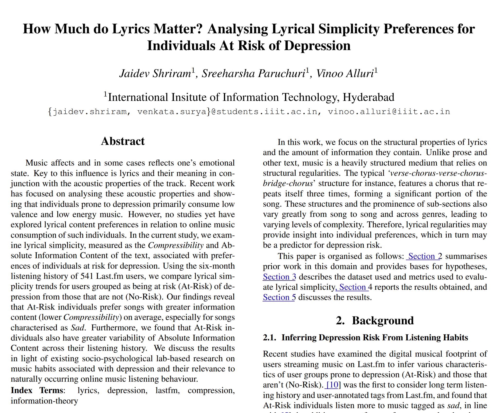
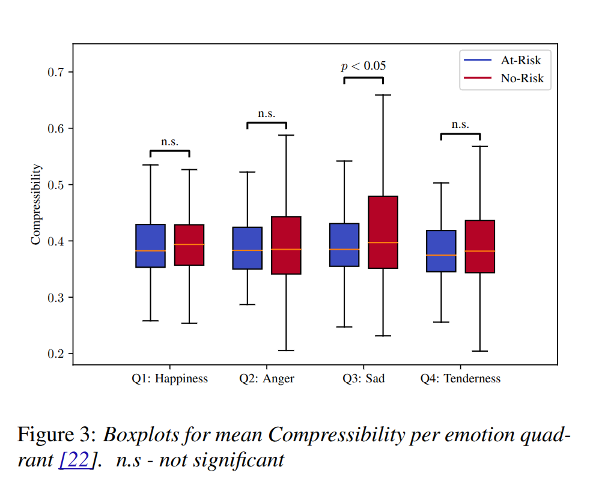
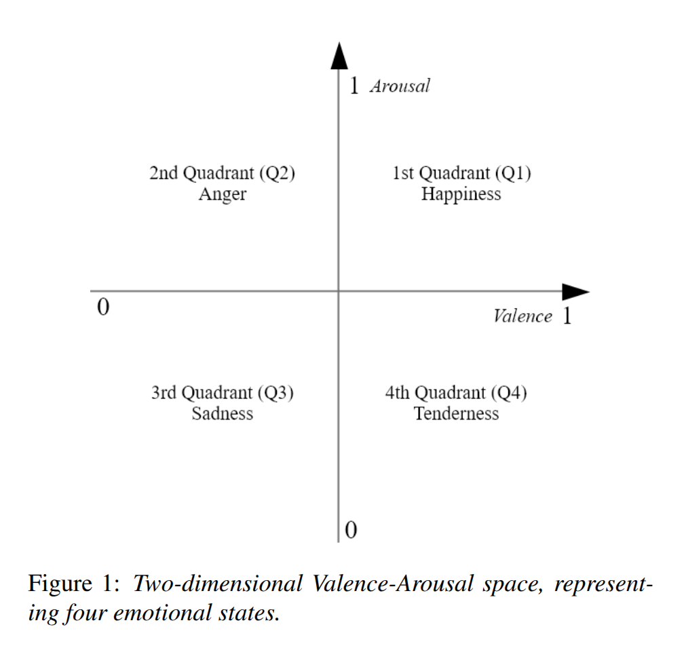
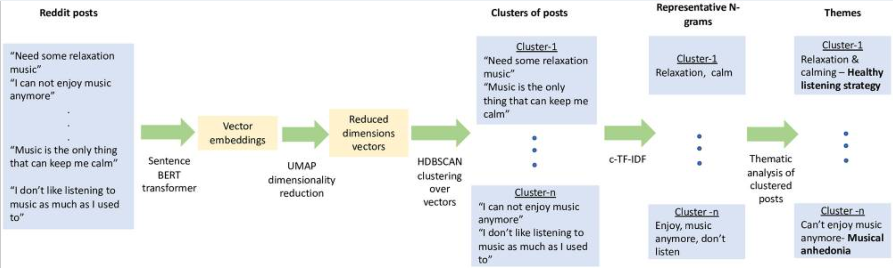
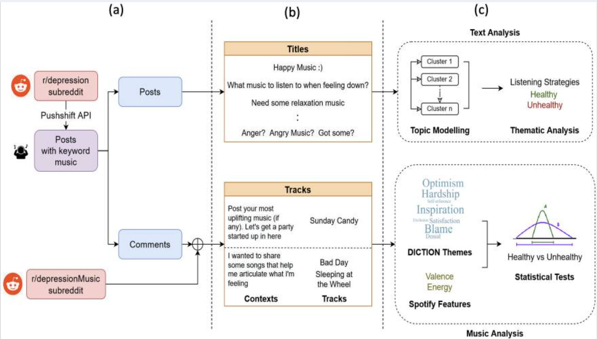
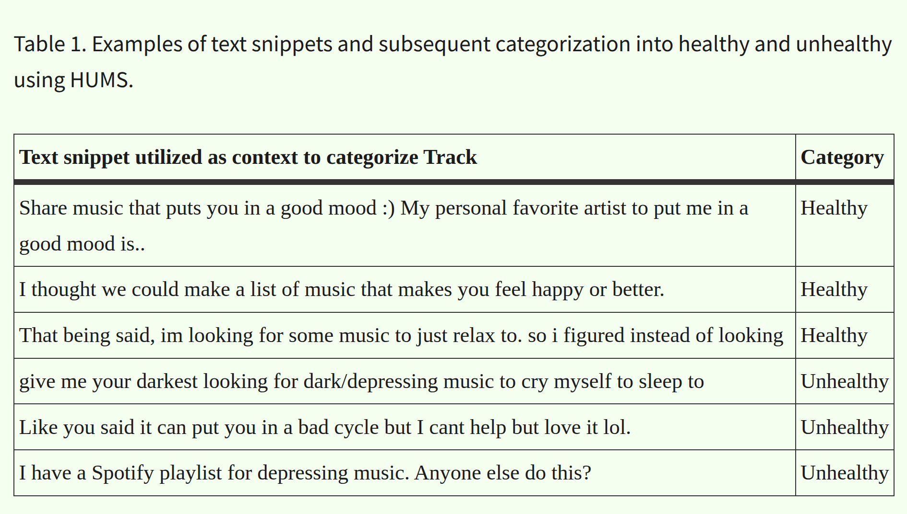

Experience
Published researcher with 2+ years in AI, robotics, and multimodal perception.
Specializing in SLAM, navigation, and foundation-model-driven vision systems.
From IIIT-H to CMU — advancing from deep technical roots to cutting-edge robotics research.
Bridging AI innovation with real-world deployment in high-velocity environments.
Where research rigor meets scalable, production-ready engineering.
Industrial
- Developed and optimized computer vision algorithms for autonomous vehicle perception systems
- Implemented real-time object detection and tracking using deep learning frameworks
- Collaborated with cross-functional teams to integrate ML models into production pipelines
- Contributed to improving system performance and reducing inference latency
Technologies: Python, PyTorch, OpenCV, CUDA, ROS
- Researched and developed novel algorithms for robotics navigation and path planning
- Implemented SLAM algorithms and sensor fusion techniques for mobile robots
- Published research findings in peer-reviewed conferences and journals
- Mentored junior researchers and contributed to open-source robotics projects
Technologies: ROS, C++, Python, MATLAB, Gazebo, PCL
- Developed computer vision solutions for automotive applications
- Worked on sensor calibration and multi-modal perception systems
- Optimized algorithms for embedded systems and real-time applications
- Collaborated with international teams on cutting-edge research projects
Technologies: C++, Python, OpenCV, TensorFlow, Linux, Git
Research Labs
- Conducted research in robot navigation and path planning algorithms
- Developed SLAM techniques for mobile robotics applications
- Published research papers in international conferences
- Collaborated on multi-disciplinary robotics projects
Technologies: ROS, Python, C++, MATLAB, OpenCV, PCL
- Conducted research in computational social science and music informatics
- Developed machine learning models for depression risk prediction
- Teaching assistant for multiple robotics and computer vision courses
- Led student teams in robotics competitions and challenges
Technologies: Python, MATLAB, Machine Learning, Signal Processing
Education
Graduate

Relevant Coursework
Computer Vision, Deep Learning, Machine Learning, Robot Kinematics & Dynamics, Systems Engineering, Perception for Autonomous Robots, Advanced Robotics, Planning Techniques for Robotics
Teaching Assistant Experience
Undergraduate
Relevant Coursework
Mobile Robotics, Computer Vision, Machine Learning, Digital Signal Processing, Music Mind and Technology, Introduction to Coding Theory, Data Structures and Algorithms, Operating Systems, Computer Networks
Teaching Assistant Experience
Projects
"The only problem without a solution is an improperly phrased one"
Explore selected highlights from my technical portfolio spanning computer vision, robotics, and machine learning. Each project represents a deep dive into cutting-edge technologies and methodologies. View all projects → or check out my GitHub for code implementations.
Dense Stereo Reconstruction in Real-time
Implementation of epipolar geometry and block-matching for disparity map computation using KITTI dataset. Advanced computer vision techniques for stereo rectification with ORB-SLAM 3 pose estimation.
More details- Real-time 3D reconstruction for robotics applications
- KITTI dataset integration with performance optimization
- ORB-SLAM 3 pose estimation implementation
- Advanced stereo rectification algorithms
Neural Machine Translation
Comparative analysis of LSTM and GRU-based Bahdanau Attention architectures for sequence-to-sequence translation. English to Hindi translation system with ADAM optimization.
More details- BLEU score metrics for architectural effectiveness analysis
- Bahdanau Attention mechanism implementation
- LSTM vs GRU comparative performance study
- ADAM optimization for enhanced convergence
Pose-Graph Optimization
Backend optimization framework for SLAM with graph-based robot trajectory modeling. Non-linear least squares optimization using Jacobian matrices and weighted loop-closures.
More details- Robust localization and mapping capabilities
- Graph-based robot trajectory modeling
- Jacobian matrices for optimization
- Weighted loop-closure detection and correction
Artpark Robotics Challenge
Second place in nationwide robotics competition with computer vision, navigation, and control integration. Real-time trash detection using RGB-D cameras with ROS navigation stack.
More details- Autonomous environmental interaction and task execution
- RGB-D camera integration for depth perception
- ROS navigation stack implementation
- Real-time computer vision processing
Publications



How Much do Lyrics Matter? Analysing Lyrical Simplicity Preferences for Individuals At Risk of Depression
We address the dearth of research into the role of lyrical regularities in songs using the LZ777 compression algorithm alongside a novel compression metric.
More details- Novel LZ777 compression algorithm application for lyrical analysis
- Comprehensive study on depression risk indicators in music preferences
- Statistical analysis revealing preference patterns for lyrical regularities
- Comparative study between at-risk and no-risk individuals



"Help! I need some music!": Analysing music discourse & depression on Reddit
During the pandemic, social media activity significantly increased as people sought online communities sharing similar opinions and thought processes.
More details- Analysis of music sharing behavior during pandemic social isolation
- Investigation of negative mood connotations in shared music content
- Reddit forum data mining and sentiment analysis techniques
- Exploration of music as therapeutic communication medium